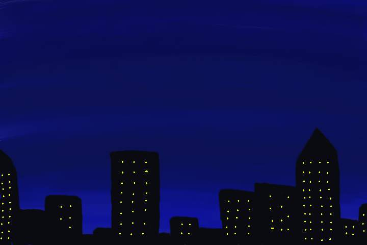

Short Storytime: In survival video games, its a common feature to have the character sleep to avoid the harder enemies that appear at night. However if an enemy is near, the player can't sleep until they leave. Now think about the last time you couldn't sleep. You might be thinking, "there was nothing in my room!" But are you sure? How do you know your temporary insomnia wasn't your body's attempt to keep whatever it was at bay? Guess you'll never know now.
